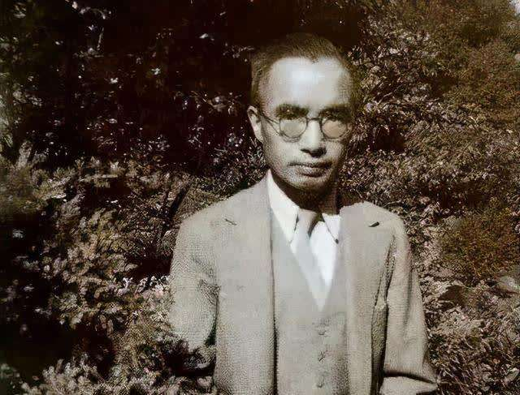

·Introduction

Zhu Ziqing's photo
Known as China’s famous essayist, poet and educator, Zhu Ziqing (November 22, 1898 - August 12, 1948), originally named Zhu Zihua,
was a pioneering literature figure in pushing forward the country’s modernism in the early 20th century.
His widely acclaimed essays include The back sight of my father, Moonlight over the lotus pond and Green, some of which are excerpted in students’ textbooks.
As a Jiangsu native, Zhu studied at the Peking University and joined the May 4th Movement in 1919. He was later appointed as the professor of Chinese literature in Tsinghua University in 1925.
From 1931-1932, he pursued the academic achievement in English Literature and Linguistic in London.
Zhu is always regarded as a patriotic scholar, who strongly opposed the country’s Civil War (1945-1949) and refused to receive the relief food distributed by the United States.
He died in serious illness and poverty at the age of 50.
·Biography

In 1916, Zhu graduated from Secondary school and entered Peking University where he fell in love and married Wu Zhongqian.
A year later, he changed his name from Zihua to Ziqing, the name change was said to be due to his family's dire economic conditions.
Zhu graduated in 1920, and went to various secondary schools in Hangzhou, Yangzhou, Shanghai and Ningbo to teach.
During his time as a teacher, he was also active in the poetry circles, and became a well-known poet.
In 1925 he was appointed professor of Chinese Literature at Tsinghua University.
In 1928, he published his first essay collection known as "Retreating Figure".
From 1931 to 1932 he studied English Literature and Linguistics in London.
He married his second wife Chen Zhuyin and continued to teach at Tsinghua University.
In 1937, when the Second Sino-Japanese War broke out, Zhu followed his university to move to Changsha, Kunming and Chengdu.
During this time, Zhu continued to teach in other universities.
Zhu later died on August 12, 1948 after joining the rebellion of refusing aid from the United States.
·Thoughts

Zhu Ziqing loves classical poetry and is very familiar with classical poetry. When he writes prose,
he can easily integrate the artistic conception of poetry and prose to create a poetic and picturesque realm in prose.
For example, he described the moonscape of the Qinhuai River in "The Qinhuai River in the Sound of Paddles and Lights":
"The moon has lost two or three points that night. She put on makeup at night, and she has a willow head. The sky is blue.
It's cute, like a puddle of water; Yue'er is even more energetic. ... It's an irregular line drawn at random."
This section contains both the meticulous depiction of close objects and the faint outline of distant views.
And all this is to highlight the main body of the picture, Yue'er, and to write the unique moon scene on the Qinhuai River. From the two aspects of form and spirit,
the inanimate things are written like the things that have life and feelings, the colors are elegant, and the pictures are beautiful.
More valuable, this is not an objective description, but the situation in the situation, the situation in the situation.
Zhu Ziqing seems to have completely melted himself into the picture and found sustenance there.
Zhu Ziqing demanded that literary language should "return to simplicity and nature" and "change from misfortune to newness".
Therefore, his prose language makes people feel simple, natural and fresh when reading, but his lyricism is delicate and vivid and has a poetic flavor.
·Works

1922 "Snow Dynasty" Poem Collection
1923 "Destruction" long poem
1928 "Back" essay
1936 "You and Me" essay
1946 "Classic Talks" Proceedings
·Reference
Zhu Ziqing - BaiduZhu Ziqing - WiKipedia